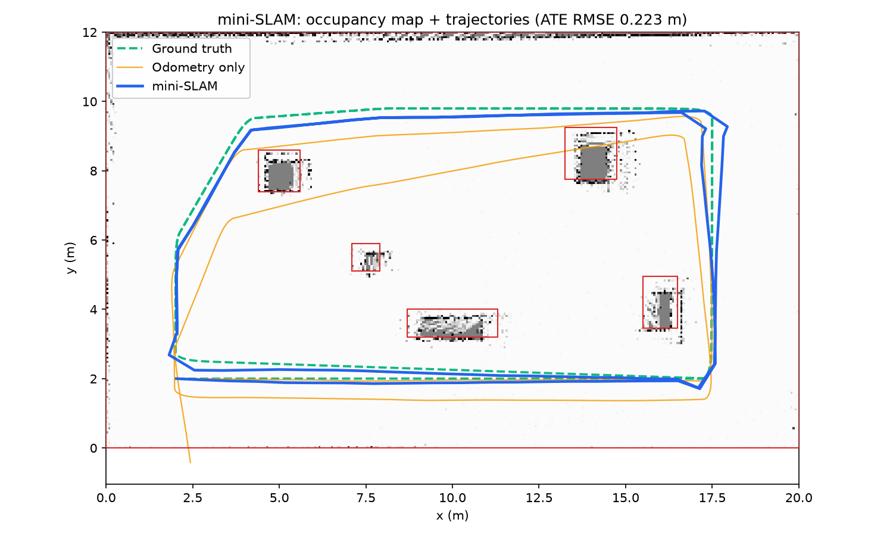

WHAT YOU'LL BUILD
你将亲手做出这两个东西
不是玩具示意 —— 下面的图全部由本课程的 Python 代码实际运行生成， 你在浏览器里看到的每一帧仿真都和它逻辑一致。

项目一 · mini-SLAM：2D 激光建图与定位
机器人在未知房间里跑两圈：里程计漂移 1.6 m，mini-SLAM 通过
ICP 扫描匹配 + 回环检测 + 位姿图优化把误差压到 0.2 m，
同时重建出干净的占据栅格地图。

项目二 · MPC 控制器：轨迹跟踪与导航
基于运动学误差模型的模型预测控制（OSQP 求解 QP），
在速度/角速度约束下横向误差 RMSE 0.012 m，
急弯处误差只有纯追踪算法的三分之一。